Distributed hash table
| This is the current revision of this page, as edited by 132.69.235.87 (talk) at 05:44, 25 September 2012. The present address (URL) is a permanent link to this version. |
A distributed hash table (DHT) is a class of a decentralized distributed system that provides a lookup service similar to a hash table; (key, value) pairs are stored in a DHT, and any participating node can efficiently retrieve the value associated with a given key. Responsibility for maintaining the mapping from keys to values is distributed among the nodes, in such a way that a change in the set of participants causes a minimal amount of disruption. This allows a DHT to scale to extremely large numbers of nodes and to handle continual node arrivals, departures, and failures.
DHTs form an infrastructure that can be used to build more complex services, such as anycast, cooperative Web caching, distributed file systems, domain name services, instant messaging, multicast, and also peer-to-peer file sharing and content distribution systems. Notable distributed networks that use DHTs include BitTorrent's distributed tracker, the Coral Content Distribution Network, the Kad network, the Storm botnet, and the YaCy search engine.
{kind=link}
Contents[hide] |
[edit] History
DT research was originally motivated, in part, by peer-to-peer systems such as Freenet, gnutella, and Napster, which took advantage of resources distributed across the Internet to provide a single useful application. In particular, they took advantage of increased bandwidth and hard disk capacity to provide a file-sharing service.
These systems differed in how they found the data their peers contained:
- Napster, the first large-scale P2P content delivery system to exist, had a central index server: each node, upon joining, would send a list of locally held files to the server, which would perform searches and refer the querier to the nodes that held the results. This central component left the system vulnerable to attacks and lawsuits.
- Gnutella and similar networks moved to a flooding query model—in essence, each search would result in a message being broadcast to every other machine in the network. While avoiding a single point of failure, this method was significantly less efficient than Napster.
- Finally, Freenet is fully distributed, but employs a heuristic key-based routing in which each file is associated with a key, and files with similar keys tend to cluster on a similar set of nodes. Queries are likely to be routed through the network to such a cluster without needing to visit many peers.[1] However, Freenet does not guarantee that data will be found.
Distributed hash tables use a more structured key-based routing in order to attain both the decentralization of Freenet and gnutella, and the efficiency and guaranteed results of Napster. One drawback is that, like Freenet, DHTs only directly support exact-match search, rather than keyword search, although Freenet's routing algorithm can be generalized to any key type where a closeness operation can be defined.[2]
In 2001, four systems—CAN, Chord,[3] Pastry, and Tapestry—ignited DHTs as a popular research topic, and this area of research remains active. Outside academia, DHT technology has been adopted as a component of BitTorrent and in the Coral Content Distribution Network.
[edit] Properties
DHTs characteristically emphasize the following properties:
- Autonomy and Decentralization: the nodes collectively form the system without any central coordination.
- Fault tolerance: the system should be reliable (in some sense) even with nodes continuously joining, leaving, and failing.
- Scalability: the system should function efficiently even with thousands or millions of nodes.
A key technique used to achieve these goals is that any one node needs to coordinate with only a few other nodes in the system – most commonly, O(log n) of the  participants (see below) – so that only a limited amount of work needs to be done for each change in membership.
participants (see below) – so that only a limited amount of work needs to be done for each change in membership.
Some DHT designs seek to be secure against malicious participants[4] and to allow participants to remain anonymous, though this is less common than in many other peer-to-peer (especially file sharing) systems; see anonymous P2P.
Finally, DHTs must deal with more traditional distributed systems issues such as load balancing, data integrity, and performance (in particular, ensuring that operations such as routing and data storage or retrieval complete quickly).
[edit] Structure
The structure of a DHT can be decomposed into several main components.[5][6] The foundation is an abstract keyspace, such as the set of 160-bit strings. A keyspace partitioning scheme splits ownership of this keyspace among the participating nodes. An overlay network then connects the nodes, allowing them to find the owner of any given key in the keyspace.
Once these components are in place, a typical use of the DHT for storage and retrieval might proceed as follows. Suppose the keyspace is the set of 160-bit strings. To store a file with given 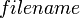 and in the DHT, the SHA-1 hash of is generated, producing a 160-bit key , and a message 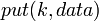 is sent to any node participating in the DHT. The message is forwarded from node to node through the overlay network until it reaches the single node responsible for key as specified by the keyspace partitioning. That node then stores the key and the data. Any other client can then retrieve the contents of the file by again hashing to produce and asking any DHT node to find the data associated with with a message 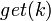. The message will again be routed through the overlay to the node responsible for , which will reply with the stored .
The keyspace partitioning and overlay network components are described below with the goal of capturing the principal ideas common to most DHTs; many designs differ in the details.
[edit] Keyspace partitioning
Most DHTs use some variant of consistent hashing to map keys to nodes. This technique employs a function 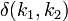 that defines an abstract notion of the distance between the keys 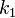 and 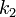, which is unrelated to geographical distance or network latency. Each node is assigned a single key called its identifier (ID). A node with ID 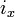 owns all the keys 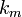 for which is the closest ID, measured according to 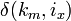.
Example. The Chord DHT treats keys as points on a circle, and is the distance traveling clockwise around the circle from to . Thus, the circular keyspace is split into contiguous segments whose endpoints are the node identifiers. If 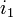 and 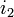 are two adjacent IDs, with as shorter clockwise distance from to , then the node with ID owns all the keys that fall between and .
Consistent hashing has the essential property that removal or addition of one node changes only the set of keys owned by the nodes with adjacent IDs, and leaves all other nodes unaffected. Contrast this with a traditional hash table in which addition or removal of one bucket causes nearly the entire keyspace to be remapped. Since any change in ownership typically corresponds to bandwidth-intensive movement of objects stored in the DHT from one node to another, minimizing such reorganization is required to efficiently support high rates of churn (node arrival and failure).
Locality-preserving hashing ensures that similar keys are assigned to similar objects. This can enable a more efficient execution of range queries. Self-Chord [7] decouples object keys from peer IDs and sorts keys along the ring with a statistical approach based on the swarm intelligence paradigm. Sorting ensures that similar keys are stored by neighbour nodes and that discovery procedures, including range queries, can be performed in logarithmic time.
[edit] Overlay network
Each node maintains a set of links to other nodes (its neighbors or routing table). Together, these links form the overlay network. A node picks its neighbors according to a certain structure, called the network's topology.
All DHT topologies share some variant of the most essential property: for any key , each node either has a node ID that owns or has a link to a node whose node ID is closer to , in terms of the keyspace distance defined above. It is then easy to route a message to the owner of any key using the following greedy algorithm (that is not necessarily globally optimal): at each step, forward the message to the neighbor whose ID is closest to . When there is no such neighbor, then we must have arrived at the closest node, which is the owner of as defined above. This style of routing is sometimes called key-based routing.
Beyond basic routing correctness, two important constraints on the topology are to guarantee that the maximum number of hops in any route (route length) is low, so that requests complete quickly; and that the maximum number of neighbors of any node (maximum node degree) is low, so that maintenance overhead is not excessive. Of course, having shorter routes requires higher maximum degree. Some common choices for maximum degree and route length are as follows, where is the number of nodes in the DHT, using Big O notation:
| Degree | Route length | Note |
|---|---|---|
| 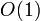 | 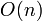 | |
| 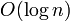 | 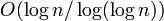 | |
| most common, but not optimal (degree/route length) | ||
| 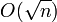 |
The most common choice, degree/route length, is not optimal in terms of degree/route length tradeoff, as such topologies typically allow more flexibility in choice of neighbors. Many DHTs use that flexibility to pick neighbors that are close in terms of latency in the physical underlying network.
Maximum route length is closely related to diameter: the maximum number of hops in any shortest path between nodes. Clearly, the network's worst case route length is at least as large as its diameter, so DHTs are limited by the degree/diameter tradeoff[8] that is fundamental in graph theory. Route length can be greater than diameter, since the greedy routing algorithm may not find shortest paths.[9]
[edit] Algorithms for overlay networks
Aside from routing, there exist many algorithms that exploit the structure of the overlay network for sending a message to all nodes, or a subset of nodes, in a DHT.[10] These algorithms are used by applications to do overlay multicast, range queries, or to collect statistics. Two systems that are based on this approach are Structella,[11] which implements flooding and random walks on a Pastry overlay, and DQ-DHT,[12] which implements a dynamic querying search algorithm over a Chord network.
[edit] DHT implementations
Most notable differences encountered in practical instances of DHT implementations include at least the following:
- The address space is a parameter of DHT. Several real world DHTs use 128-bit or 160-bit key space
- Some real-world DHTs use hash functions other than SHA-1.
- In the real world the key could be a hash of a file's content rather than a hash of a file's name to provide content-addressable storage, so that renaming of the file does not prevent users from finding it.
- Some DHTs may also publish objects of different types. For example, key could be the node and associated data could describe how to contact this node. This allows publication-of-presence information and often used in IM applications, etc. In the simplest case, is just a random number that is directly used as key (so in a 160-bit DHT will be a 160-bit number, usually randomly chosen). In some DHTs, publishing of nodes IDs is also used to optimize DHT operations.
- Redundancy can be added to improve reliability. The 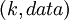 key pair can be stored in more than one node corresponding to the key. Usually, rather than selecting just one node, real world DHT algorithms select suitable nodes, with being an implementation-specific parameter of the DHT. In some DHT designs, nodes agree to handle a certain keyspace range, the size of which may be chosen dynamically, rather than hard-coded.
- Some advanced DHTs like Kademlia perform iterative lookups through the DHT first in order to select a set of suitable nodes and send messages only to those nodes, thus drastically reducing useless traffic, since published messages are only sent to nodes that seem suitable for storing the key ; and iterative lookups cover just a small set of nodes rather than the entire DHT, reducing useless forwarding. In such DHTs, forwarding of messages may only occur as part of a self-healing algorithm: if a target node receives a message, but believes that is out of its handled range and a closer node (in terms of DHT keyspace) is known, the message is forwarded to that node. Otherwise, data are indexed locally. This leads to a somewhat self-balancing DHT behavior. Of course, such an algorithm requires nodes to publish their presence data in the DHT so the iterative lookups can be performed.
[edit] Examples
[edit] DHT protocols and implementations
- Apache Cassandra
- BitTorrent DHT (based on Kademlia as provided by Khashmir[13])
- CAN (Content Addressable Network)
- Chord
- Kademlia
- Pastry
- P-Grid
- Tapestry
- TomP2P
[edit] Applications employing DHTs
- BTDigg: BitTorrent DHT search engine
- CloudSNAP: a decentralized web application deployment platform
- Codeen: Web caching
- Coral Content Distribution Network
- Dijjer: Freenet-like distribution network
- FAROO: Peer-to-peer Web search engine
- Freenet: A censorship-resistant anonymous network
- GNUnet: Freenet-like distribution network including a DHT implementation
- JXTA: Opensource P2P platform
- maidsafe: C++ implementation of Kademlia, with NAT traversal and crypto libraries. On its home page listed as "Available as a technology licence and a software solution written in cross platform C++."[14]
- Oracle Coherence: An In Memory Data Grid built on a Java DHT implementation
- Retroshare: a Friend-to-friend network[15]
- WebSphere eXtreme Scale: proprietary DHT implementation by IBM,[16] used for object caching
- YaCy: distributed search engine
- i2p-Bote: Decentralised email service which stores encrypted messages in a DHT.
- Cjdns: Routing engine for mesh-based networks
- openkad - Java implementation of Kademlia with distributed caching (GNU GPL v3 license)
[edit] See also
{kind=link}
- membase: a persistent, replicated, clustered distributed object storage system compatible with memcached protocol
- memcached: a high-performance, distributed memory object caching system
- NCache: a high-performance, distributed in-memory object caching system
- prefix hash tree: sophisticated querying over DHTs
- most distributed data stores employ some form of DHT for lookup.
[edit] References
- ^ Searching in a Small World Chapters 1 & 2, https://freenetproject.org/papers/lic.pdf, retrieved 2012-01-10
- ^ "Section 5.2.2", A Distributed Decentralized Information Storage and Retrieval System, https://freenetproject.org/papers/ddisrs.pdf, retrieved 2012-01-10
- ^ Hari Balakrishnan, M. Frans Kaashoek, David Karger, Robert Morris, and Ion Stoica. Looking up data in P2P systems. In Communications of the ACM, February 2003.
- ^ Guido Urdaneta, Guillaume Pierre and Maarten van Steen. A Survey of DHT Security Techniques. ACM Computing Surveys 43(2), January 2011.
- ^ Moni Naor and Udi Wieder. Novel Architectures for P2P Applications: the Continuous-Discrete Approach. Proc. SPAA, 2003.
- ^ Gurmeet Singh Manku. Dipsea: A Modular Distributed Hash Table. Ph. D. Thesis (Stanford University), August 2004.
- ^ Agostino Forestiero, Emilio Leonardi, Carlo Mastroianni and Michela Meo. Self-Chord: a Bio-Inspired P2P Framework for Self-Organizing Distributed Systems. IEEE/ACM Transactions on Networking, 2010.
- ^ The (Degree,Diameter) Problem for Graphs, Maite71.upc.es, http://maite71.upc.es/grup_de_grafs/table_g.html, retrieved 2012-01-10
- ^ Gurmeet Singh Manku, Moni Naor, and Udi Wieder. Know thy Neighbor's Neighbor: the Power of Lookahead in Randomized P2P Networks. Proc. STOC, 2004.
- ^ Ali Ghodsi. Distributed k-ary System: Algorithms for Distributed Hash Tables. KTH-Royal Institute of Technology, 2006.
- ^ Miguel Castro, Manuel Costa, and Antony Rowstron. Should we build Gnutella on a structured overlay?. Computer Communication Review, 2004.
- ^ Domenico Talia and Paolo Trunfio. Enabling Dynamic Querying over Distributed Hash Tables. Journal of Parallel and Distributed Computing, 2010.
- ^ Tribler wiki retrieved January 2010.
- ^ maidsafe-dht, Code.google.com, http://code.google.com/p/maidsafe-dht/, retrieved 2012-01-10
- ^ Retroshare FAQ retrieved December 2011
- ^ Billy Newport, IBM Distinguished Engineer retrieved October 2010.
[edit] External links
- Distributed Hash Tables, Part 1 by Brandon Wiley.
- Distributed Hash Tables links Carles Pairot's Page on DHT and P2P research
- kademlia.scs.cs.nyu.edu Archive.org snapshots of kademlia.scs.cs.nyu.edu
- Hazelcast on Google Code: open source DHT implementation
- Eng-Keong Lua; Crowcroft, Jon; Pias, Marcelo; Sharma, Ravi; Lim, Steve. IEEE Survey on overlay network schemes. CiteSeerX: 10.1.1.111.4197: covering unstructured and structured decentralized overlay networks including DHTs (Chord, Pastry, Tapestry and others).